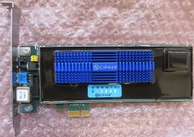
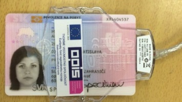
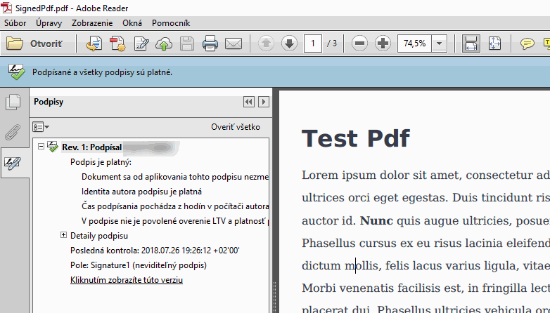

V tomto článku sa pokúsim v skratke vysvetliť princípy podpisovania dokumentov pomocou PKCS#11 a ukážem to a Slovenskom eID-čku, pomocou jednoduchej konzolovej aplikácii v .Net Core.
Disclaimer: Podpisová aplikácia má slúžiť len na ukážku princípov, nevytvára validné podpisy podľa Európskej legislatívy (eIDAS PAdES), aj keď mnohé známe firmy posielajú faktúry podpísané rovnakým spôsobom. Použitie len na vlastné riziko!
Zdrojové kódy ukážkovej aplikácie sa nachádzajú na https://github.com/harrison314/SlovakEidSignTool.
PKCS#11 je štandard definujúci C-éčkove API pre komunikáciu z crypto tokenmi ako sú HSM (Hardware security module), tokeny a čipové karty (smart cards). Práve Slovenské eID-čko je takáto čipová karta.
Na obrázku nižšie sa nachádza HSM-ko a slovenské eID.
 
V projekte využívam knižnicu PKCS#11-interop, ktorá tvorí manažovaný wrapper, nad C-čkovým API.
Na začiatku sa načíta a inicializuje PKCS#11 knižnica pre eID, ktorá je súčasťou aplikácie eID klient.
Vyberie sa slot a token, v tomto prípade je slot čítačka kariet a token samotná čipová karta, eID-čko má slot zo ZEP certifikátom označený labelom SIG_ZEP, program ho vyberie.
Načítajú sa informácie o tokene a zistí sa, či je preň potrebná autentifikácia. Pre eID-čko je to BOK PIN, ktorý umožní prístup k objektom na karte.
Objekty sú napríklad certifikáty, kľúče, dáta, HW features,... Každý objekt je reprezentovaný definovanou množinou atribútov. Knižnice implementujúce štandard PKCS#11 izolujú operácie pomocou sessions (operácie v rámci jednej otvorenej session nemajú garantované thread-safe spávanie), jeho zvláštnosťou je, že keď je autentifikovaná jedna session, tak sú autentifikované všetky v aplikácii.
Vytvorí sa nová session, ktorá je už autentifikovaná, a vyhľadajú sa všetky certifikáty na tokene. Vyextrahuje sa certifikát v binárnej podobe (atribút CKA_VALUE) a v C# kóde sa zistí, ktorý z certifikátov je určený na podpis dokumentov (certifikát má extension s flagom NonRepudiation). Následne sa k nemu vyhľadá privátny kľuč, ten má spravidla rovnaké atribúty CKA_ID a CKA_LABEL ako príslušný certifikát. Na eID-čku sa dá ZEP/KEP privátny kľúč a certifikát nájsť aj podľa špecifického labelu, ale na to som sa v aplikácii nechcel spoliehať.
Podpísanie PDF-ka má a starosti knižnica iTextSharp, program implementuje rozhranie IExternalSignature, v ktorom prebieha samotné podpísanie PDF-dokumentu. Na vstup dostane dáta z PDF-ka, z ktorých sa vytvorí SHA-256 hash. Z neho sa vytvorí PKCS#1 digest info (ASN.1 dátová štruktúra, ktorá je vhodná na podpísanie RSA kľúčom).
Samotný podpis musí byť v prípade eID-čka autentifikovaný ZEP PIN-om, ten sa zadáva po inicializácii podpisovania. Čip v eID-čku podpíše hash a vráti podpis. Ten vráti v metóde rozhrania IExternalSignature a iTextSharp dokončí podpisovanie a uloží PDF-ko na disk.
Princíp realizácie podpisu pomocou slovenského eID je podobný ako podpisovanie inými krypto zariadeniami, ku ktorým sa pristupuje pomocou štandardu PKCS#11.
Ukážkový program využíva knižnice PKCS#11 interop na interakciu z PKCS#11 knižnicou, iTextSharp pre manipuláciu s PDF dokumentom a CommandLine pre parsovanie CLI parametrov.
Vytvorenie "surového" RSA alebo EC podpisu je ľahké, ťažšie je to robiť dobre (ochrana PIN-ov, certifikácia softvéru pre podpis od NBU, splnenie špecifikácie pre konkrétne druhy podpisov). Takto podpísané PDF-ko je v Adobre Readery zelené.

No podpis nie je platným eIDAS PAdES podpisom, chýbajú mu rôzne atribúty, odkaz na podpisovú politiku,...